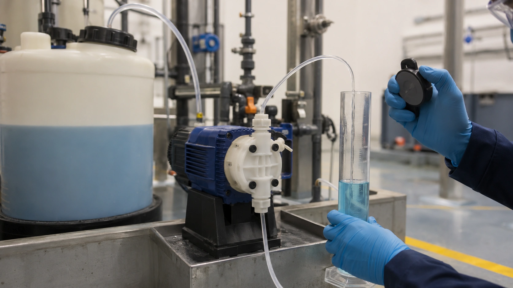

Chemical dosing e bomba dosadora: cálculo, calibração e controle
Conteúdo técnico: ALOGY Engenharia · Atualizado em: 11/09/2026

A posição de stroke ou o percentual exibido pela bomba não garantem a massa de produto entregue ao processo. A estimativa começa no balanço de massa; a verificação em campo precisa incluir concentração, densidade, contrapressão, condição da sucção, comando elétrico e vazão realmente deslocada.
Balanço de massa em ppm e mg/L
Em soluções aquosas diluídas, 1 ppm costuma ser aproximado como 1 mg/L quando essa equivalência é adequada à aplicação. Para vazão de processo Q em m³/h e dose-alvo D em mg/L:
qproduto (L/h) = mativo ÷ (w × ρ)
Exemplo: 50 m³/h × 25 mg/L exigem 1,25 kg/h de ativo. Para produto a 12% em massa e densidade 1,10 kg/L, a vazão teórica é aproximadamente 9,47 L/h. Se “12%” estiver em outra base ou a densidade variar, use os dados reais do produto.
Dosing pump calibration: meça a vazão real
Uma coluna de calibração pode medir o volume deslocado em um intervalo conhecido, na condição segura prevista pelo procedimento. Registre pressão de descarga, stroke/frequency, tempo e variação de volume.
Se a coluna indicar 158 mL em 60 s, a vazão é aproximadamente 9,48 L/h. Repita pontos da faixa e registre a condição as-found antes de qualquer ajuste e as-left depois da intervenção.
PLC scaling, 4-20 mA, pulsos e stroke rate
A cadeia de comando também precisa ser testada. Uma bomba pode estar mecanicamente correta e receber uma escala errada do PLC. Confirme a relação entre a saída analógica ou frequência de pulsos e a referência usada pela bomba.
- force um comando conhecido dentro de condição segura;
- compare o valor bruto e a unidade de engenharia no PLC;
- confirme 4–20 mA, pulsos ou frequência efetivamente recebidos;
- compare o stroke rate indicado com o comportamento real da bomba;
- meça a vazão na contrapressão normal em mais de um ponto.
Por que a instalação muda a vazão
Bombas dosadoras de deslocamento positivo dependem do enchimento da câmara e do funcionamento correto das retenções. Sucção longa ou restritiva, gás liberado, válvula suja, alta viscosidade ou entrada de ar podem reduzir o volume por golpe. Na descarga, sifonamento ou contrapressão inadequada também alteram a entrega.
Válvula de contrapressão, antissifão e proteção contra sobrepressão só devem ser aplicadas quando compatíveis com a hidráulica, o produto e a documentação do conjunto.
Fechando a malha com analyzer feedback
O analisador não deve ser usado para “corrigir” uma bomba sem antes considerar o atraso físico do processo. Depois de uma mudança no comando, a resposta pode depender do transporte da amostra, mistura, reação química e constante de tempo do sensor.
Se a dosagem aumenta e o analyzer não responde imediatamente, não conclua que a bomba falhou. Confirme primeiro vazão dosada e depois compare a tendência no tempo correto. Isso é especialmente importante em pH e ORP, onde ganho excessivo e dead time podem produzir oscilações.
Diagnóstico do comando até o processo
- Calcule a vazão teórica com a base correta de concentração e densidade.
- Confirme scaling e comando no PLC/controller.
- Verifique o sinal que chega à bomba: 4-20 mA, pulsos ou comunicação aplicável.
- Meça a vazão real na contrapressão representativa.
- Compare consumo do tanque/lote com a dosagem calculada.
- Aguarde transporte, mistura e resposta antes de interpretar o analyzer.
Essa sequência separa erro de cálculo, erro de automação, falha hidráulica e atraso analítico.
Erros comuns
- usar concentração sem saber se é massa/massa, massa/volume ou volume/volume;
- configurar pulsos ou 4–20 mA com escala diferente entre PLC e bomba;
- aceitar a posição do botão como vazão sem teste volumétrico;
- ignorar gás, cristalização, válvulas de retenção ou sifonamento;
- aumentar dose para compensar sensor sujo ou sample system atrasado.
Ferramentas e conteúdos relacionados
Aviso técnico
Este material é educativo. Não dimensiona definitivamente bomba, tubulação, contenção, alívio ou sistema de dosagem. Produtos corrosivos, oxidantes, tóxicos ou reativos exigem ficha de segurança, compatibilidade de materiais, análise de risco e procedimento aprovado. Não abra ou calibre uma linha sem confirmar isolamento, pressão e destino seguro do produto.